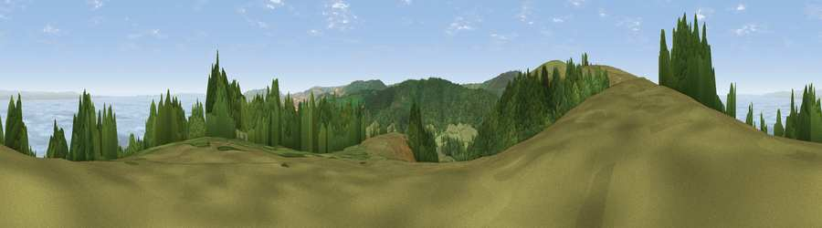

Viewpoint near Minehead
#11435 in England · top 30% of its area beats it · near MineheadThe view, rendered

A 360° render of this exact spot computed from the terrain model, tree cover and land cover — summer colours, afternoon light, calibrated against photographs of famous viewpoints. Real trees, hedges and buildings will differ in detail.
The panorama
Grey silhouette: terrain skyline in each direction (720 bearings, Earth curvature and refraction included). Dashed green: skyline with trees (+15 m) and buildings (+8 m) as obstacles. Blue strip: how far the ground is visible on each bearing.
Where the view opens
Wedge length = distance to the farthest visible ground on that bearing (vegetation-aware). Rings at 10, 25 and 50 km.
What fills the view
41% water · 30% woodland · 25% grassland · 2% cropland · 2% built-up
Angular shares of the visible panorama (visual magnitude), not map area. Landscape diversity 0.53 (0–1 Shannon).
Key numbers
More beautiful places nearby
The staircase of upgrades: each row has a higher view potential than everything closer. Driving times are estimates from straight-line distance, calibrated against real road routing — check an actual route before setting out.
| Place | Direction | Drive | Score |
|---|---|---|---|
| Viewpoint near Minehead | WSW · 1 km | ~2 min | 86.2 |
| North Hill | W · 1 km | ~3 min | 86.3 |
| Viewpoint near Allerford | WNW · 2 km | ~5 min | 86.7 |
| Selworthy Beacon | W · 3 km | ~8 min | 88.7 |
| Holdstone Hill | W · 33 km | ~51 min | 90.2 |
| The Knoll | SE · 83 km | ~107 min | 91.0 |
51.21730, -3.50013 · source: screening · position refined by local search. Computed location — check access rights before visiting.